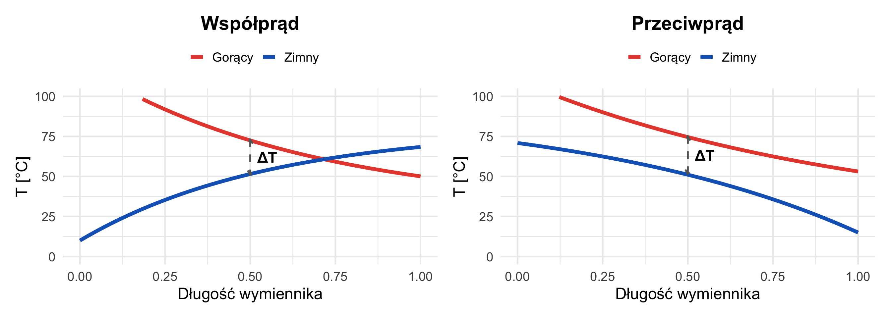

W14: Wymiana Ciepła
Mechanizmy Transportu Energii
prof. UPP dr hab. inż. Marek Urbaniak
Wydział Inżynierii Środowiska i Inżynierii Mechanicznej


Agenda Wykładu
- Trzy Mechanizmy Wymiany Ciepła
- Przewodzenie (Prawo Fouriera, Ściana)
- Konwekcja (Prawo Newtona, Liczba Nusselta)
- Promieniowanie (Prawo Stefana-Boltzmanna)
- Przenikanie Ciepła (Współczynnik U)
1. Mechanizmy Wymiany Ciepła
Podstawowa zasada
Ciepło płynie zawsze, gdy istnieje \(\Delta T\). Jakim “autobusem”?
| Mechanizm | Medium | Przykład | Intensywność |
|---|---|---|---|
| Przewodzenie | Ciała stałe | Ściana, rura | λ = 0.04–400 W/mK |
| Konwekcja | Płyny | Kaloryfer, wiatr | α = 5–5000 W/m²K |
| Promieniowanie | Próżnia/gaz | Słońce, ogień | ∼ T⁴ |
2. Przewodzenie i Prawo Fouriera
Prawo Fouriera: Strumień ciepła jest proporcjonalny do gradientu temperatury.
\[ \dot{q} = - \lambda \frac{dT}{dx} \quad [\frac{W}{m^2}] \]
- \(\lambda\) (Lambda): Przewodność cieplna materiału.
* Miedź: 400 W/mK
* Cegła: 0.8 W/mK
* Styropian: 0.04 W/mK (Izolator ma niską lambdę).Ściana Płaska
\[ \dot{Q} = \frac{\lambda}{\delta} A (T_1 - T_2) \] \(\delta\): Grubość ściany.
Opór Cieplny (\(R\)). Analogia elektryczna
\[ \dot{Q} = \frac{\Delta T}{R_{term}} \] \[ R_{przewodzenia} = \frac{\delta}{\lambda A} \]
Dla ściany wielowarstwowej (cegła + styropian + tynk): \[ R_{calkowite} = R_1 + R_2 + R_3 \]
Duży opór = Dobra izolacja.
3. Konwekcja i Prawo Newtona
Prawo Newtona dla konwekcji
Ruch płynu “zmywa” ciepło z powierzchni.
\[ \dot{Q} = \alpha A (T_{pow} - T_{pl}) \]
- \(\alpha\) (Alfa): Współczynnik przejmowania ciepła.
* Konwekcja naturalna (kaloryfer): 5-20 W/m²K
* Konwekcja wymuszona (wiatr, wentylator): 50-200 W/m²K
* Wrzenie wody: 5000+ W/m²KPrzenikanie Ciepła (Współczynnik U)
Współczynnik przenikania ciepła
W budownictwie interesuje nas ciepło płynące od powietrza wewn. do powietrza zewn. Suma oporów (R_si + R_sciany + R_se).
\[ U = k = \frac{1}{R_{si} + \Sigma \frac{\delta}{\lambda} + R_{se}} \]
Dla nowoczesnego domu \(U < 0.2\) W/(m²K).
4. Promieniowanie
Prawo Stefana-Boltzmanna
Każde ciało emituje światło. Moc emisji ciała doskonale czarnego:
\[ E_b = \sigma T^4 \]
- \(\sigma\): Stała Stefana-Boltzmanna (\(5.67 \cdot 10^{-8}\)).
- \(T\): Temperatura w Kelvinach!
Wymiana między ciałami
\[ \dot{Q} = \varepsilon \sigma A (T_1^4 - T_2^4) \]
Promieniowanie dominuje przy wysokich temperaturach (ogień, słońce), ale w budownictwie też jest ważne (straty przez okna).
5. Wymienniki Ciepła
Wymienniki ciepła
Urządzenia do przekazywania ciepła z jednego płynu do drugiego bez mieszania ich.
- Współprąd: Oba płyny płyną w tym samym kierunku.
- Przeciwprąd: Płyną przeciwnie. (Najbardziej efektywny!).
\[ \dot{Q} = U A \Delta T_{ln} \]
\(\Delta T_{ln}\) - Logarytmiczna różnica temperatur (LMTD).
Współprąd vs Przeciwprąd — Porównanie
Ważne
Wniosek praktyczny: Przy tych samych temperaturach wlotowych, wymiennik przeciwprądowy ma wyższe \(\Delta T_{ln}\) → potrzebuje mniejszej powierzchni \(A\) (tańszy!) lub osiąga większą moc \(\dot{Q}\).
Podsumowanie W14
- Izolacja to walka z przewodzeniem (\(\lambda\)).
- Radiator to walka z konwekcją (zwiększanie \(A\) i \(\alpha\)).
- Promieniowanie zależy od \(T^4\) - małe zmiany temperatury dają wielkie zmiany mocy.
- Współczynnik U to klucz do energooszczędnych budynków.
Zadanie Dla Chętnych
Oblicz współczynnik U dla ściany
Cegła 25cm (\(\lambda=0.8\)) + Styropian 15cm (\(\lambda=0.04\)). Pomiń \(R_s\).
Rozwiązanie Zadania
Dane: Cegła: \(\delta_{ceg} = 0.25\) m, \(\lambda_{ceg} = 0.8\) W/(m\(\cdot\)K) Styropian: \(\delta_{styr} = 0.15\) m, \(\lambda_{styr} = 0.04\) W/(m\(\cdot\)K) Pomijamy opory zjawisk konwekcyjnych na powierzchniach (\(R_{si}\) i \(R_{se}\)).
1. Opory cieplne warstw
Wzór na opór przewodzenia: \(R = \frac{\delta}{\lambda}\) \[ R_{ceg} = \frac{0.25}{0.8} = \mathbf{0.3125 \, \text{m}^2\text{K/W}} \] \[ R_{styr} = \frac{0.15}{0.04} = \mathbf{3.75 \, \text{m}^2\text{K/W}} \]
2. Opór całkowity i U
Suma oporów warstw (opór termiczny dla szeregowego przepływu): \[ R_{tot} = 0.3125 + 3.75 \approx \mathbf{4.06 \, \text{m}^2\text{K/W}} \]
Współczynnik przenikania ciepła \(U\): \[ U = \frac{1}{R_{tot}} = \frac{1}{4.06} \approx \mathbf{0.246 \, \text{W/(m}^2\text{K)}} \]
Wniosek
Styropian stawia ponad 10 razy większy opór cieplny (\(3.75\)) niż grubsza cegła (\(0.31\))! Izolator “wykonuje całą robotę” blokując przepływ.
Termodynamika Techniczna (W14)